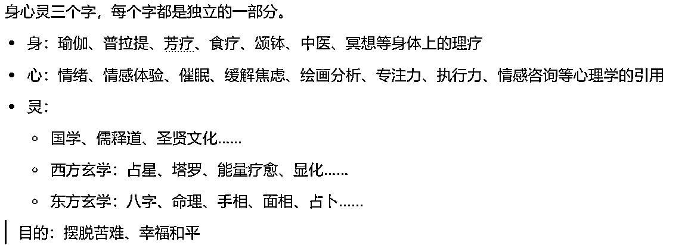
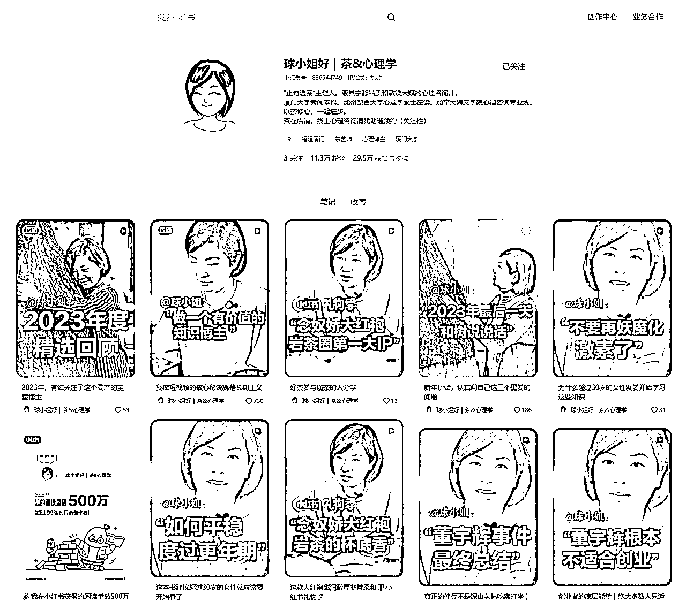
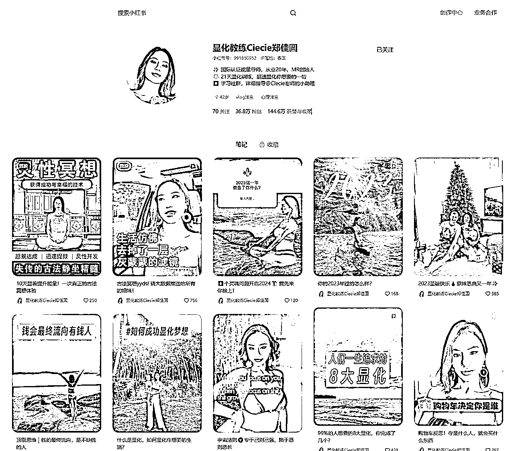

风向标拆解第2期--怎么在小红书做一个赚钱的身心灵账号--华尔街之狼
来源：https://qc7u7ru59d.feishu.cn/docx/HtTAdpRpDowFawxyo2DcUv9znif
注：以下案例中的人还没通过我的好友，通过之后我会把后端的产品和利润计算补上。大家先凑合看，见谅。😭😭😭
1、身心灵包括什么

2、项目方案
2.1、混剪图文+视频
适用于想入局身心灵的新手，可以快速获得正反馈。适合快速起号。
2.1.1、案例一
- 视频制作简单，通过混剪图文和视频来获取流量，适合批量化矩阵操作进行放大。
- 由于不是真人出镜，很难建立信任感，所以上限低，大单不好成交。
- 笔记制作：把从知乎和微博抄来的文案或者gpt生成的文案，用自己声音念一遍。

2.1.2、案例二
- 视频制作简单，通过制作图文获取流量，适合批量化矩阵操作进行放大。
- 由于不是真人出镜，很难建立信任感，所以上限低，大单不好成交。
- 疗愈陪伴营，21天399元。一般购买体验过一次，我们就能做出差不多的产品出来。

总结：可以前期起号用这种形式，流量好了真人出镜做ip。
其他同类型账号：
2.2、真人出镜做ip
一个ip要想赚大钱，出高客单，必须满足三个要素：信任感，影响力，有成交。不真人出镜不好建立信任感，所以不容易赚大钱，这也是必须真人出镜的原因。
这里建议身心灵与其他结合起来，这样做差异化定位比较好。
注意事项：
- ip本人的质感很重要，环境搭建也要注意一下，这个赛道，氛围感很重要
真人出镜如何放大：
- 降低制作一个视频的时间，一个号做起来后马上铺矩阵。
- 拍口播，找人专门写文案，然后出镜的只记个大概意思，就能拍视频了。一天产出30条视频不是问题。
- 让出镜的人每天直播，把直播素材交给剪辑，做直播切片。
2.2.1、案例一

2.2.2、案例二

2.2.3、案例三

2.3、卖铲子-教别人做疗愈师
2.3.1、案例一：
- 疗愈师系统培训线下课，可免费复训，有陪伴群。包括正念疗愈，铜锣颂钵疗愈，催眠疗愈，禅修。客单价4680。
- 线下课：一个月2次。一次12人，客单价4680。合计112320。
- 音聊师证书：按总参与人数一半的人计算，也就是12人，客单价1200，合计14400。
- 成本：假设自己做流量，后端对一个老师，两次6k。租场地两次4k。
- 优点：你关注对方后，对方会主动给你发联系方式，减少了用户的抵达成本。都是高客单。
- 缺点：整个账号都是广告，没有人设，没有人情味，甚至都没有线下课的画面。可以改进的地方很多。

2.3.2、案例二：
- 产品：颂钵疗愈师培训、冥想疗愈师培训、芳香疗愈师培训、多个城市线下课、疗愈年卡、30天财富觉醒
- 缺点：整个账号都是直接硬怼广告。没有人设，没有人情味，甚至都没有线下课的画面。可以改进的地方很多。

3、身心灵ip账号的最终解
混剪图文和视频起号+真人出镜做ip+卖铲子三管齐下，配合引流产品（线上课-低客单）+后端盈利产品（线下课或陪伴型社群-高客单）+培训产品（教别人如何进入这一行-超高客单）。只要坚持并不断优化不好的地方，必然会有一个不错的结果。